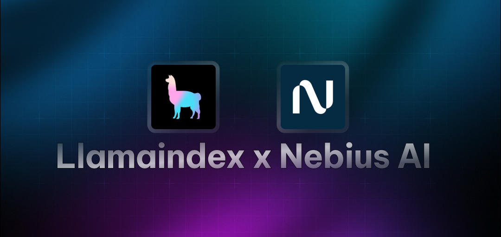

LlamaIndex Starter Agent
A powerful AI agent template built with LlamaIndex that demonstrates how to create intelligent agents using the LlamaIndex framework. This starter project implements a Task Management Assistant using the Nebius AI model to showcase LlamaIndex's capabilities in building practical AI applications.
Features
- 🛠️ LlamaIndex Integration: Built using LlamaIndex's powerful agent framework
- ⏱️ Custom Tools: Example implementation of custom function tools
- 🤖 ReAct Agent: Demonstrates LlamaIndex's ReAct agent pattern
- 📊 Practical Example: Task management assistant with real-world use cases
- ⚡ Easy to Extend: Well-structured code for adding your own tools and functionality
References and Acknowledgements
- LlamaIndex docs
- Nebius AI
- Contributed from awesome-ai-apps
Tech Stack
- Agno framework for AI agent development
- Nebius AI's for running LLMs. We are using
openai/gpt-oss-20breasoning model - HackerNews Tool from Agno
Prerequisites
- Python 3.10 or higher
- Nebius API key (get it from Nebius Token Factory)
Installation
1. Get the code
git clone https://github.com/nebius/token-factory-cookbook/
cd agents/llamaindex-task-timer
2. Install dependencies:
# create a venv and install dependencies
uv sync
Or install using python pip
pip install -r requirements.txt
3 - Create .env file
Create a .env file in the project root and add your Nebius API key:
cp env.example .env
NEBIUS_API_KEY=your_api_key_here
Running the agent
Using uv
uv sync
uv run python agent.py
Using python pip
python agent.py
The agent will start with a welcome message and show available capabilities. You can interact with it by typing your questions or commands.
Example Implementation
This starter implements a Task Management Assistant with the following capabilities:
- Duration Analysis: Calculate time durations between tasks
- Task Estimation: Estimate completion times for multiple tasks
- Productivity Tracking: Calculate and analyze productivity rates
Example queries:
- "If I worked from 09:00 to 17:00 and completed 8 tasks, what was my productivity rate?"
- "How long will it take to complete 3 tasks that each take 45 minutes?"
- "Calculate the duration between 09:00 and 17:00"
Extending the Agent
To add your own functionality:
- Create new function tools using
FunctionTool.from_defaults() - Add your tools to the agent's tool list
- Implement your custom logic in the functions